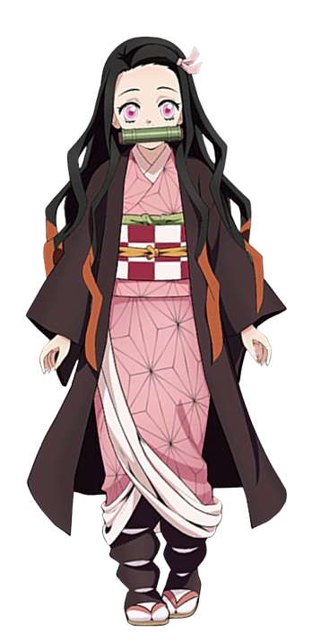
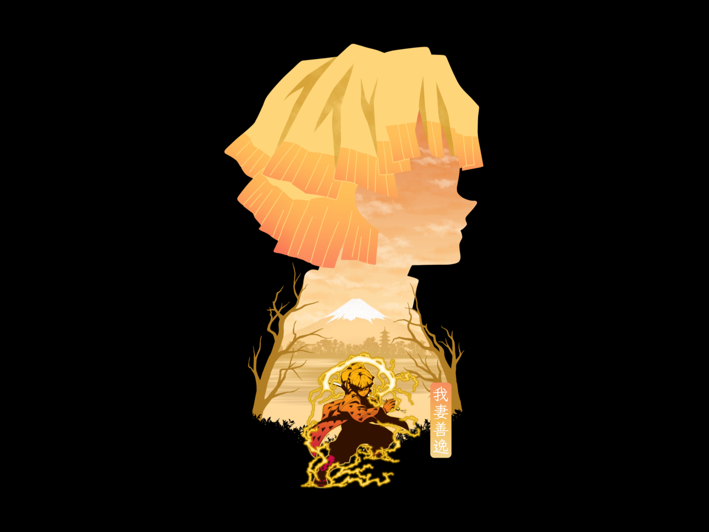
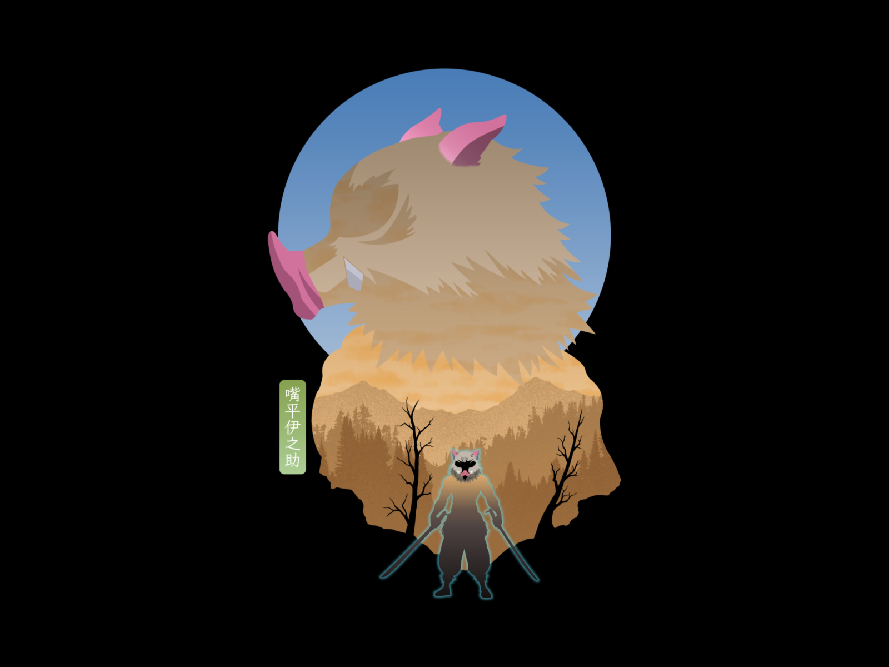

Overview
Demon Slayer follows the journey of Tanjiro Kamado, a young boy who becomes a demon slayer after his family is slaughtered by demons.
His sister Nezuko is turned into a demon but retains her humanity. Together, they embark on a quest to find a cure for her and to eliminate demons.
Characters

Tanjiro Kamado
Main protagonist who joins the Demon Slayer Corps to save his sister.

Nezuko Kamado
Tanjiro's sister who was turned into a demon but retains her humanity.

Zenitsu Agatsuma
A fellow demon slayer with a fearful personality but immense power.

Inosuke Hashibira
A wild and skilled fighter who wields two swords.
Unwavering Resolve Arc
Description for Unwavering Resolve Arc.
Mugen Train Arc
Description for Mugen Train Arc.
Entertainment District Arc
Description for Entertainment District Arc.
Swordsmith Village Arc
Description for Swordsmith Village Arc.
Hashira Training Arc
Description for Hashira Training Arc.
Final Battle Arc
Description for Final Battle Arc.